Using Configurator
In this article
- Configurator Hierarchy
- Application Settings
- Optional Application Settings
- Environment Configuration Settings
Objective
Configurator is an application provided by VotanicXR, to configure the settings for VotanicXR applications. Developer may open the configuration files via configurator, or create a new configuration file by configurator.
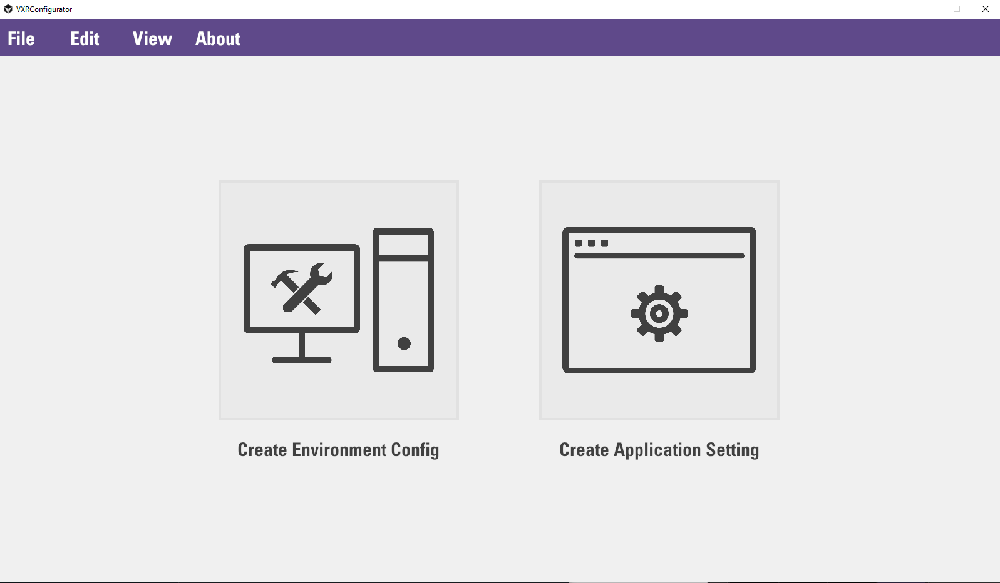
Configurator Hierarchy
The configurator can be classified into two main part, Application configuration and Environment configuration.
There are four menu buttons, File, Edit, View and About.
File button is to manage the configuration files, including create, open, and save the configuration files.
The configuration files created are the template with usable standard.
Edit is to manage the change of the configuration files, including revert the changes.
View is to manage the display of the configurator. including change the theme.
About is to display the information of the configurator.
Configurations in VotanicXR
The configuration files are stored into three main types of files, including Config file, Setting file, and Option file.
The path of the configuration files will be stored at Assets/Votanic/VotanicXR/vGear/System of the Unity Project, and Build/VotanicXR of the built folder.
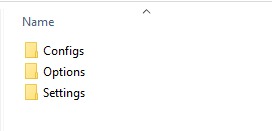
Config File
The Config files store the environment setting of the project.
The file is using json structure with vxrc file format.
By default, the Config files correspond to the environment.
For HMD, the config file of it is ConfigHMD.vxrc.
Setting File
The Setting files store the main application setting of the project.
The file is using json structure with vxrs file format.
Option File
The Option files store the optional application setting of the project.
The file is using json structure with vxro file format.
Set up Locomotion Sample Scenecommand.
Open Sample Scene
Go to Assets > Votanic > VotanicXR_Tutorial > Tutorial11_configurator and open the scene Configurator provided.
GameObject TutorialController with script component Tutorial11Controller is provided for the testing of custom commands.
To modify the configuration files, go to Assets > Votanic > VotanicXR_Tutorial > Common Resources and open the corresponding file with configurator.
Application Settings
The application settings are the settings for application, it is classified into main settings and optional settings.
Main Application Settings
The main application settings includes the XR Attributes, Performances, Frame & Users, Controllers and Commands.
The first three tabs are the application related to vGear, detail will be introduced in XR Attribute and vGear Detail.
The later section will focus on the Controllers and Commands
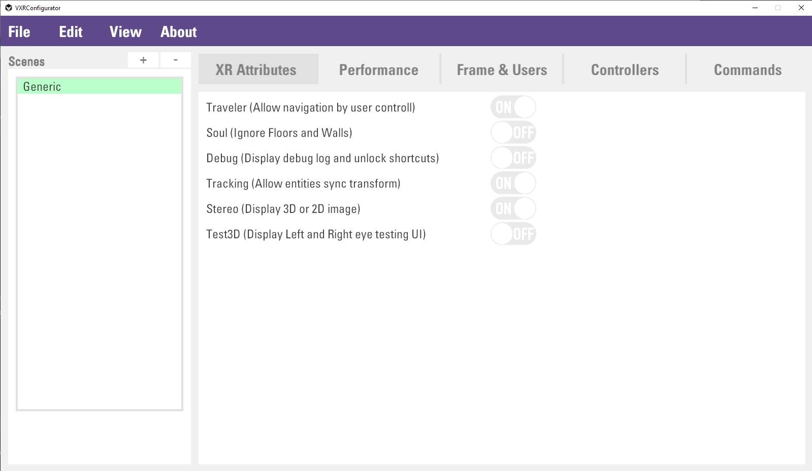
In the application settings view, the left side is to manage the scene.
When the scene is selected, the configuration stored at right side will be saved for the selected scene.
Generic is the generic setting stored for the scene, if the scene is not specified.
To specify a scene, click the + button and select the added scene.
Change the scene path below for the specified scene.
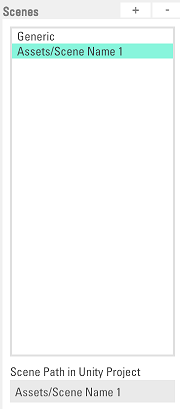
Controllers Setting
For the Controller tab, it stores the controller setting for the corresponding scene.
Controller Properties
Controller properties stores the properties related to the controller, including Name, Bind Buttons, Bind Axes and Default Tool.
By default, the Bind Buttons will be empty and the Auto Find Buttons will be enabled.
Similarly, the Bind Axes will be empty and the Auto Find Axes will be enabled.
New controller can be set by click the + button next to the Controller title.
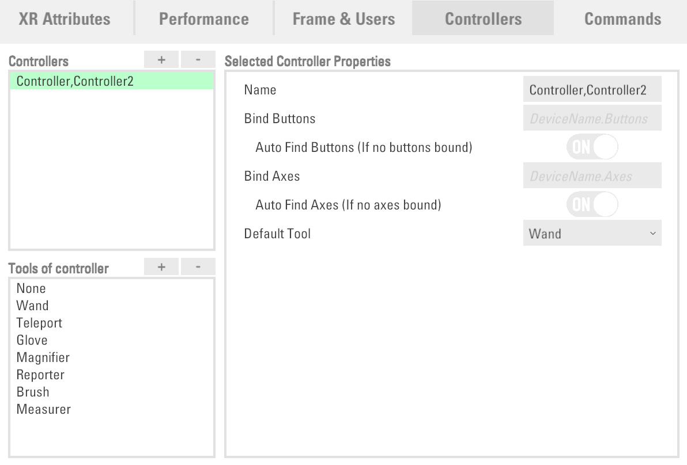
Tools of Controller
The selected controller properties stores the properties of the tool related to the controller, such as Tool switching, Wand and Glove Interactive.
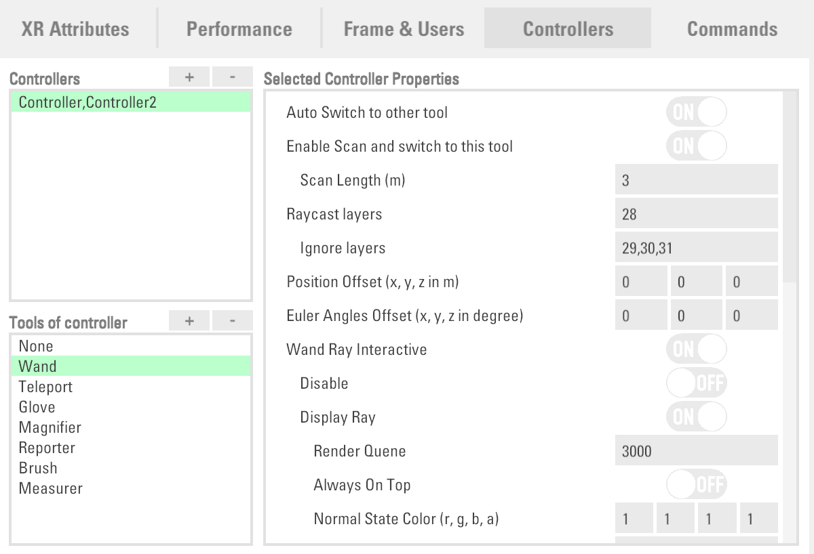
The tool list is empty for the new added controller, developer may add and delete the tools.
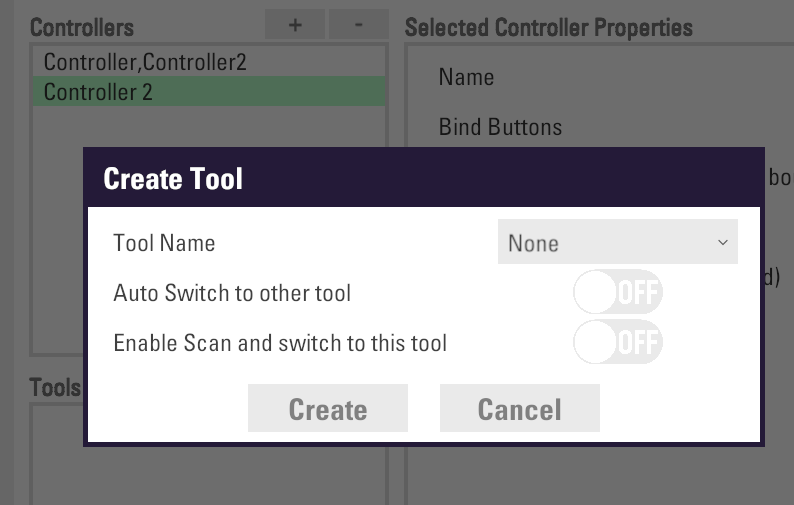
Commands Setting
The Commands tab stores the command for the application.
The commands created by configurator can be sent from the bound controller input, and received by the command handler.
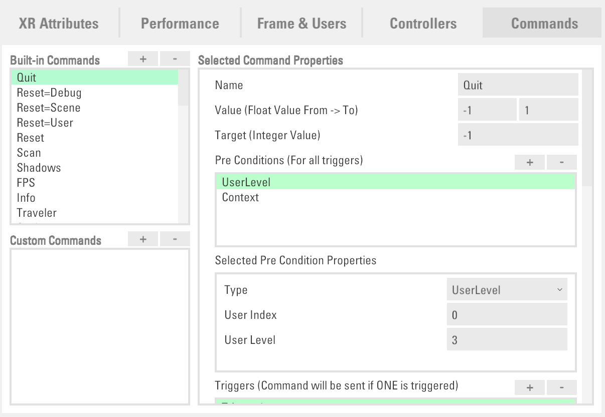
Built-in Commands
By default, there are lot of commands are built-in, including movement commands, tool commands and applcation commands.
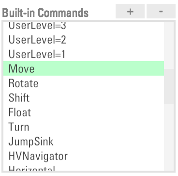
Some commands described in previous chapters, are not stored in the built-in command, such as Pick, can be added with click the + button next to the Built-in Commands title.
The command properties will be described in next section.
Command Properties
The command properties can be classified into three main fields, condition, input, and value.
The command properties of the built-in commands can be used as reference to create custom commands, the below will take built-in command Move as example.
Condition
Condition can be pre-condition of the command and the condition of the input trigger.
Condition of a command can be multipled, the pre-conditions of Move commands are Traveler and Context with mode index zero.
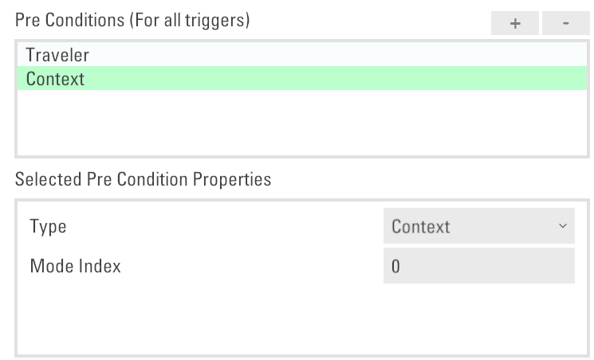
For the conditions, there are some options to be choosen, can be divided into several main groups, will be introduced in the table below.
| Attribute | The condition related to vGear Attribute.
Includes Traveler, Soul, Debug, Tracking, Stereo, Test3D,NonTraveler, NonSoul, NonDebug, NonTracking, NonStereo, NonTest3D. |
| Userlevel | Userlevel is a status for the shortcut of different kind of user.
Detail is introduced in Structure. Parameters includes User Index and user level. |
| Context | Context mode is a variable provided by API, the condition will be satisfied when the context mode stored is the same as the context mode variable. |
| Tool | The parameters of tool codition includes the Controller Index and Tool Name.
When the current of the correponding controller match this field, it fulfills the condition. |
| Object | Object condition includes NoObject, SelectObject, TriggerObject and GrabObject.
When the controller with the input Controller Index is not interacting with objects or is selecting, triggering, grabbing objects, it fulfills the condition. |
| Device | The condition is satisfied when using the controller with Controller Index to input. |
| Environment | The condition reads the environment the application using, the input Environment Type can be string of the following, PC, CAVE, HMD and DOME. |
| CommandReceived | The condition reads the command handler, when the input Command Name is read by the handler, it fulfills the condition. |
Inputs
Input of the Command is named Trigger.
Trigger can be set with condition, then the input will only be read when
Trigger can be multipled, command will be sent if one of the trigger is triggered.
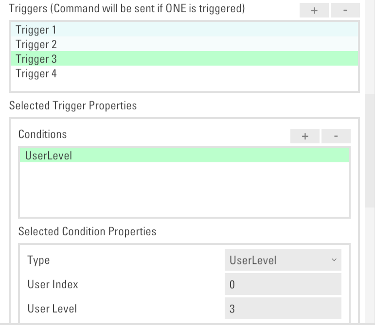
For the field about the inputs, there are Input Controller, Input Method, Inputs and Selected Input Properties.
The Input Controller stores the controller index.
Input Method are Single, Double, Triple, Multiple and Combo.
Single, Double, Triple, Multiple are the count of defined input within certain period.
Combo is inputting the consecutive inputs within certain period.
Inputs is the avalible inputs of the command, the name of the input at the list will be renamed automatically with corresponding input property Type.
Selected Input Properties stores the property of the selected input, there are Type, Key and Reverse.
Type includes the device interaction(Press, Up, Down and Hold, and value for axes) of devices, includes Mouse and Keyboard for PC, Button and Axis for controller.
Key stores the corresponding index of key.
Reverse stores a boolean, when it is enabled, the command will not be sent when the key is interacting, but it sends the command when the key is not interacting.
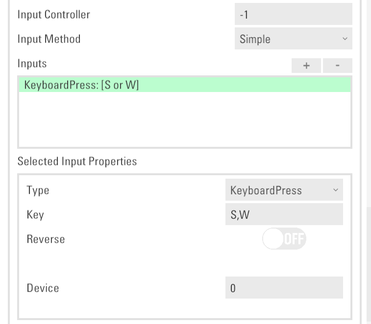
For example in the built-in command Move, there are four triggers.
The Trigger 1 accepts the AxisValue with axis index 1 of input controller 0 with disabled reverse, this trigger works without condition.
The Trigger 2 is similar to Trigger 1 with input controller 1.
The Trigger 3 accepts KeyboardPress of keyboard (input controller with index -1) input S and W, this trigger works when the user level is 3.
The Trigger 4 is similar to Trigger 3 with the Environment PC.
Return Values
This part stores the cofiguration related to the return value.
There will be three values to be returned, Name, Value and Target.
Name is the command string to be sent.
Value is the float value to be sent, if the command is triggered by the axis, it will return the mapped
Target is a integer value to be sent.
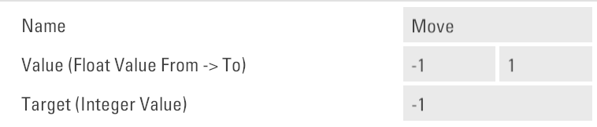
Optional Application Settings
The optional application settings includes the In Game Menu, Landing Menu and Waypoints.
We will focus on In Game Menu in this tutorial.
In Game Menu Settings
The usage of In Game Menu is introduced before. This section introdices the setting of the In Game Menu Settings and the way to add item to the In Game Menu.
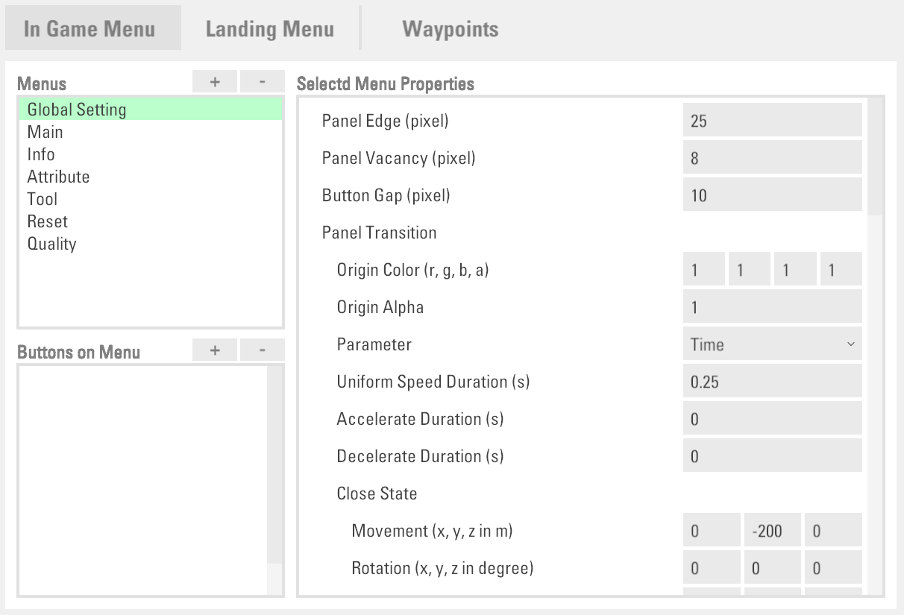
Global Settings
This properties controls the display and transition settings of the In Game Menu. The relative calculation of 3D UI is introduced in Interact with 3D UI.
Menus
Each menu contains three properties, Panel Name, Level and Grabbable.
Level refers to the level of hierarchy of the page, level 0 is the root of the menu called Main.
Other predefined menus are level 1.
Grabbable is a boolean to toggle the grabbability of the sub menu of the page.
To add a new page, click the + button next to Menus title, and edit the corresponding properties.
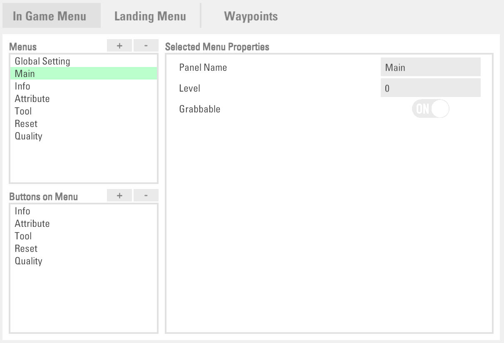
Button
Each button contains four properties, Button Name, Icon Index , Interaction Type and Command to send.
Icon Index stores the index for the icon display next to the button, detail is introduced in Customize Menu Item Icon.
Interaction Type is the type of interaction corresponds to the interaction type of vgear Interactable.
Command to send stores the command, Value and Target, when the button is interacted, the command with the values will be sent.
To add a new page, click the + button next to Buttons on Menu title, and edit the corresponding properties.
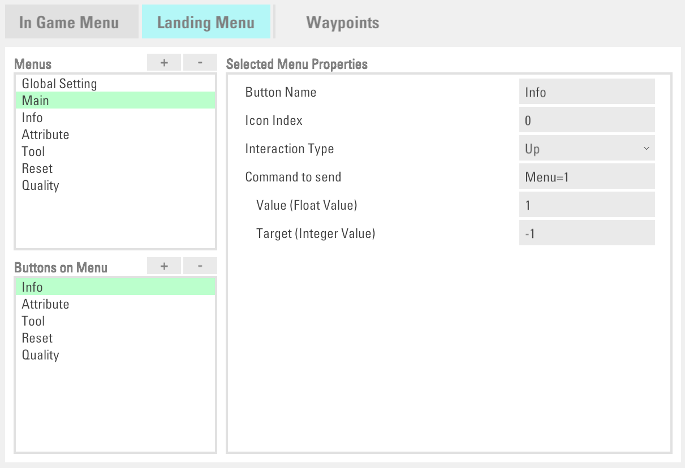
Environment Configuration Settings
The environment configs are the configuration for different environments, including PC, HMD, CAVE and DOME.
The environment configs including System, Devices, XR Objects, Display and Info Wall.
The left side of the window is the 3D Space View and Viewports Diagram.
The view windows can be clicked to enlarge and change the viewing angle using mouse keys.
3D Space View is the view for the reference the XR Objects, will be introduced below.
Viewports Diagram is the diagram for the reference display viewports, will be introduced in Display Setting below.
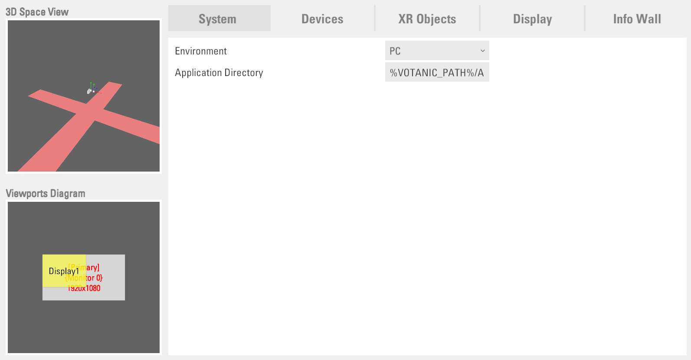
System
There are two settings stored in System.
Environment is an option to set the current config for the environment, option including PC, HMD, CAVE and DOME.
Application Directory is the directory stored for the global application.
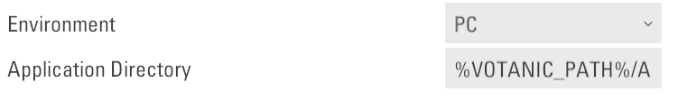
Device
This section stores the devices setting and provides the input test for the devices.
General Setting
It stores three properties, including Holding Duration, Axes Dead Zone and Axes Press Detect Value.
Holding Duration is the holding time for the Hold interaction related to vGear.
Axes Dead Zone is the dead zone for the controller axes, input before the dead zone will not be counted.
Axes Press Detect Value is the value to detect the responce of axis pressing.
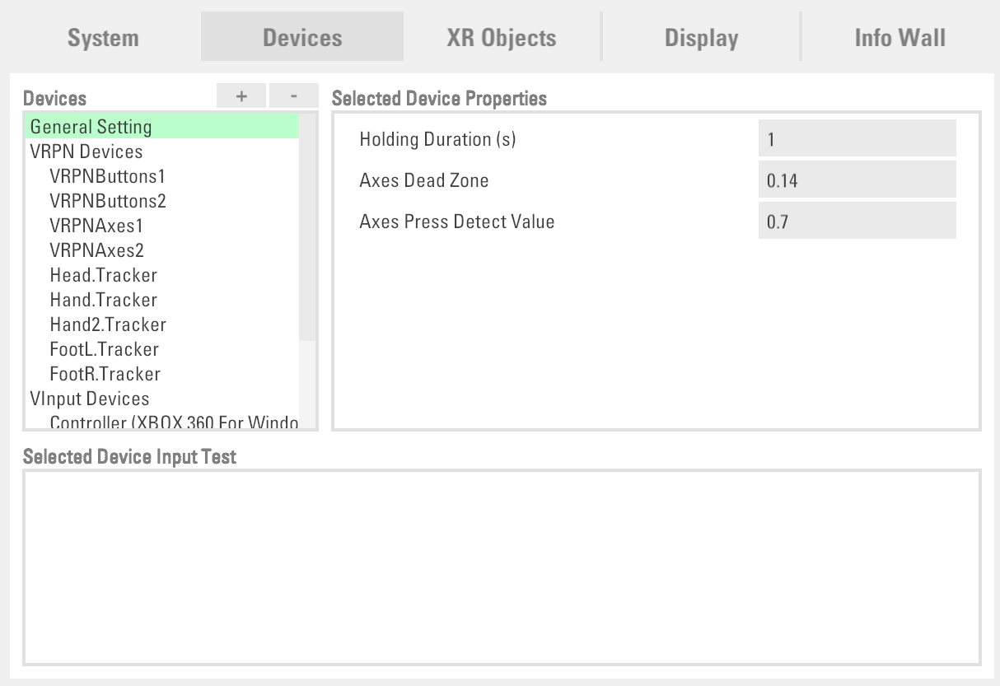
Device Type
There are three device types supported by VotanicXR SDK, they are VRPN, VInput and OpenVR Device.
VRPN
VRPN stands for Virtual-Reality Peripheral Network, is a device-independent, network-based interface.
There are three types of VRPN Devices in VotanicXR, simply classified into VRPN Buttons, VRPN Axes and Trackers,
By default, there are nine VRPN devices provided in the template, and the tracker are supported with the XR Objects of VotanicXR SDK.
The VRPN Devices have some common device properties, Name and Address.
Name is the device name for the recognizition of other configuration.
Address is the network address of the corresponding device.
For the device properties of VRPN Buttons, it stores the Number of Buttons.
The buttons can be tested at the below window Selected Device Input Test.
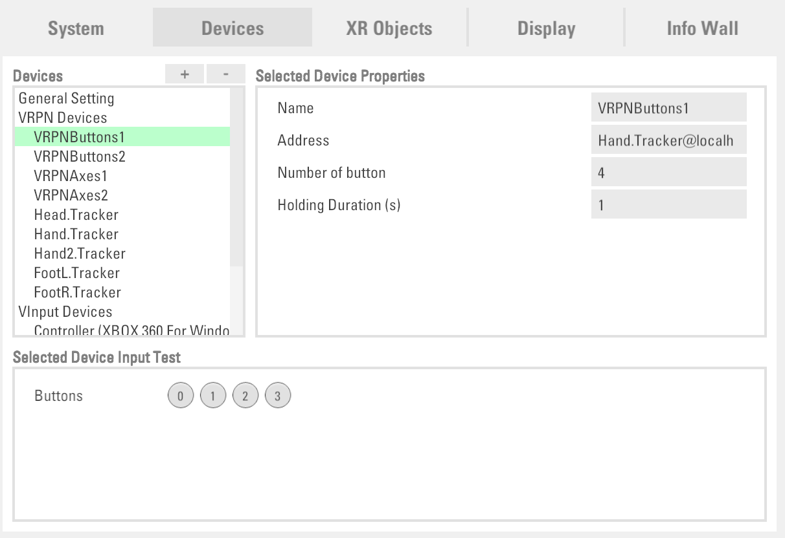
For the device properties of VRPN Axes, it stores the Number of Axis.
The axes can be tested at the below window Selected Device Input Test.
Other properties, Holding Duration, Dead Zone and Press Detect Value, can be configurated for the specific value.
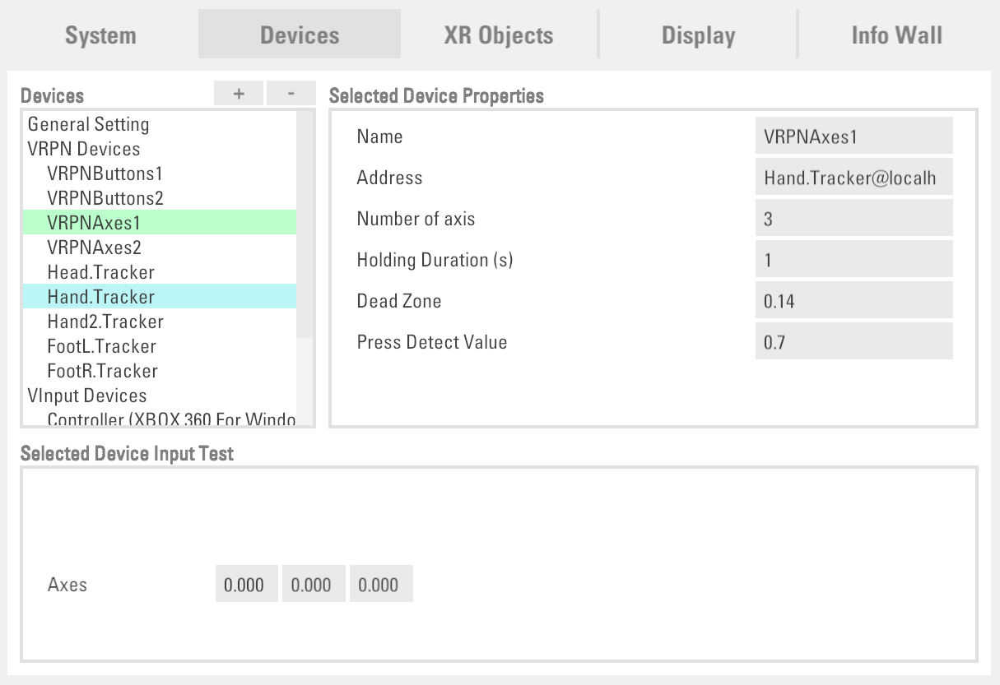
For the device properties of Tracker, it stores Channel and the direction of the tracker.
Channel is the channel for the real peripheral trackers, to distinguish the real trackers if the application connected more than one set.
The direction, Forward, Up and Right, are the relative direction for the tracker to the virtual world.
The options of the direction are ±X, ±Y, ±Z with respect to the virtual world, and Auto for the auto selection.
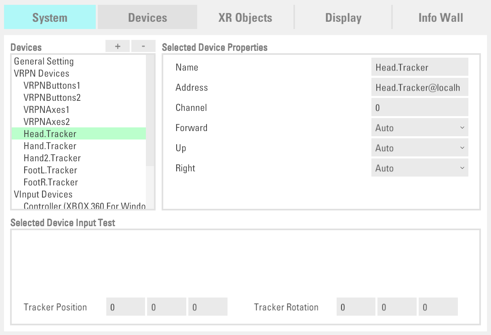
To create more VRPN Devices, click the + button next to the above the device hierarchy, and input the name, address and device type.
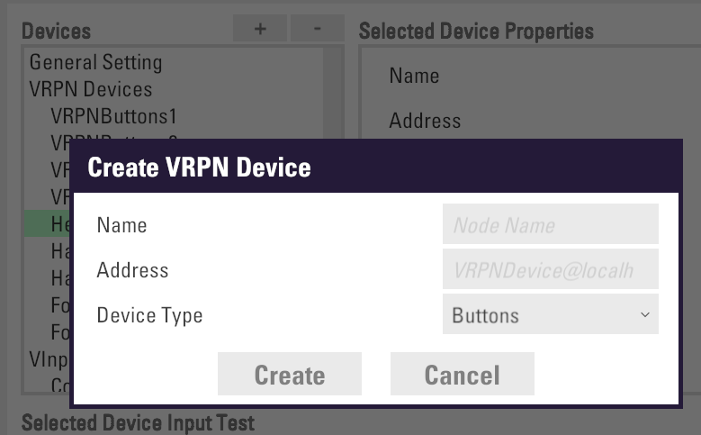
VInput
VInput is the API of VotanicXR SDK using DirectInput and XInput, to transfer the input of devices connected into the application.
The VInput devices will be auto conntected, and can be tested at the below window Selected Device Input Test.
The properties are similar, they are Holding Duration, Axes Dead Zone and Axes Press Detect Value.
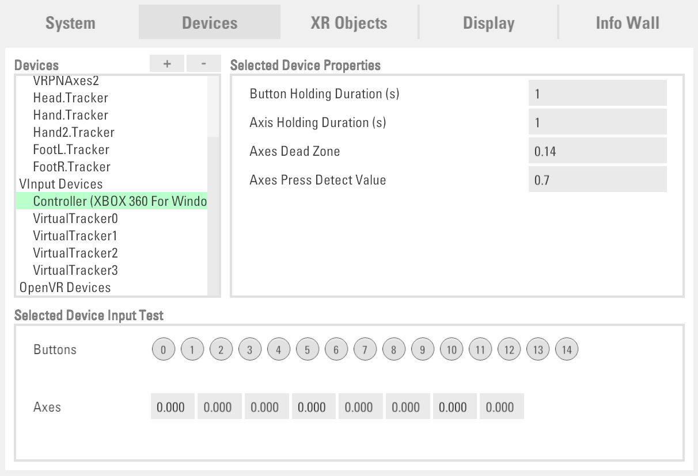
OpenVR Device
OpenVR is the API developed by Valve for supporting the SteamVR. VotanicXR supports the connection of using OpenVR devices.
When the OpenVR devices are connected, such as HTC Vive, the devices will be shown on the Devices Hierarchy. The device properties can be configured and test.
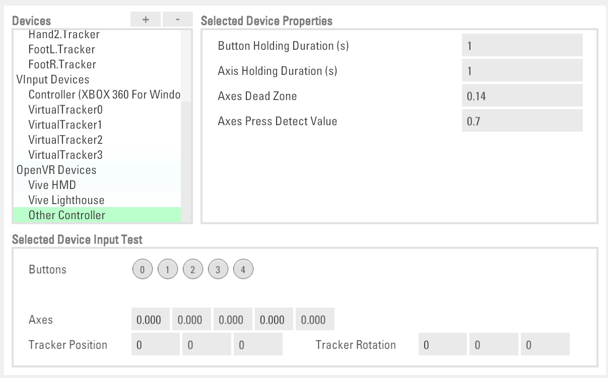
XR Objects Setting
This section stores the setting related to the XR objects. Remind that this part has different structure for different environments.
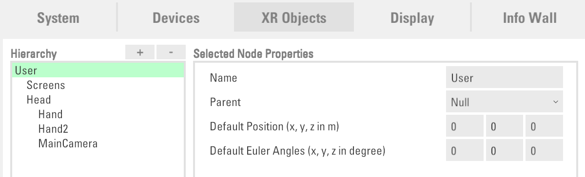
The XR Objects will be shown at the 3D Space View window, the below is the view of the CAVE environment.
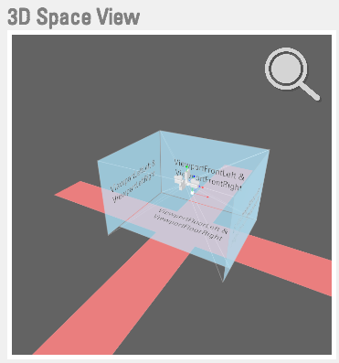
Node Types
There are four types of node, Node, Entity, Screen and Camera.
The common properties of the nodes are Name and Parent.
Parent is the parent of the current node to inherit the parent position and euler angle.
Node is the node without other properties, for the structure of other nodes.
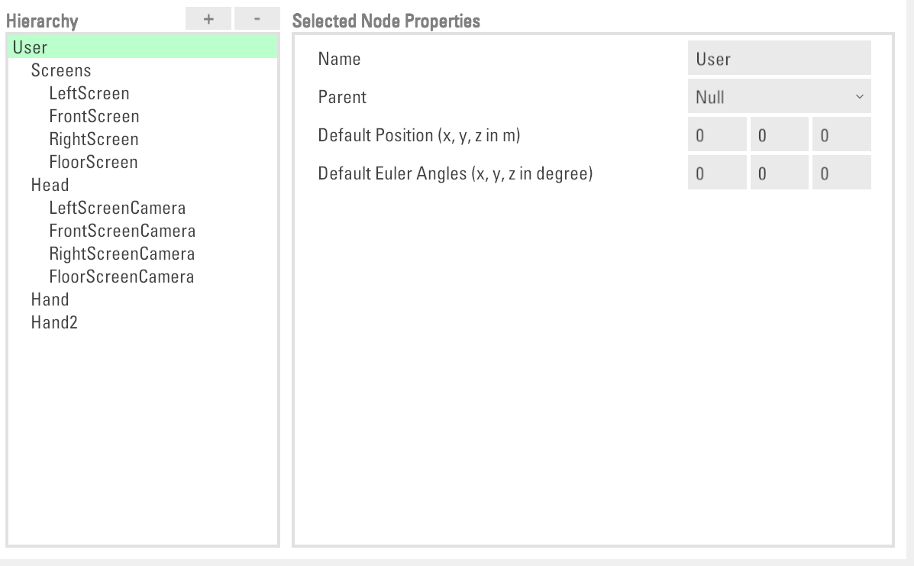
Entity is the entity linked with corresponding tracker and device.
Linked Tracker stores the tracker name stored in Device page.
Linked Virtual Device is the virtual device name for the input control.
Tracking Mode can be set for different tracking mode, to enable the position tracking and rotation tracking.
Tracking Position Offset and Tracking Euler Angles Offset are the offset for the tracking.
Lost Tracking Action is the action if the tracking is lost, by default it will Keep Idle, the action will retry for the Retry times with the Custom Position and Custom Euler Angles.
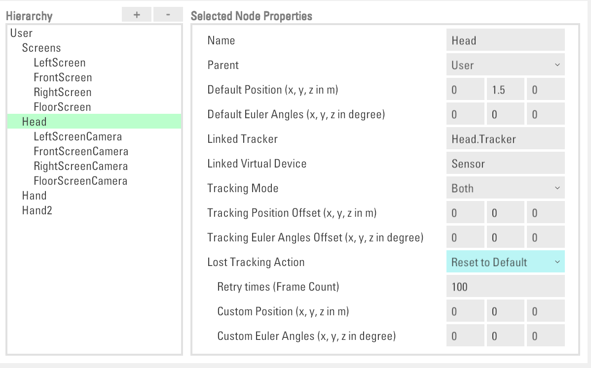
Screen is the screen for the projection of camera.
Size is the actual size of the screen.
Too Close Warning is the warning if the user is too close to the screen with Warning Maximum Distance.
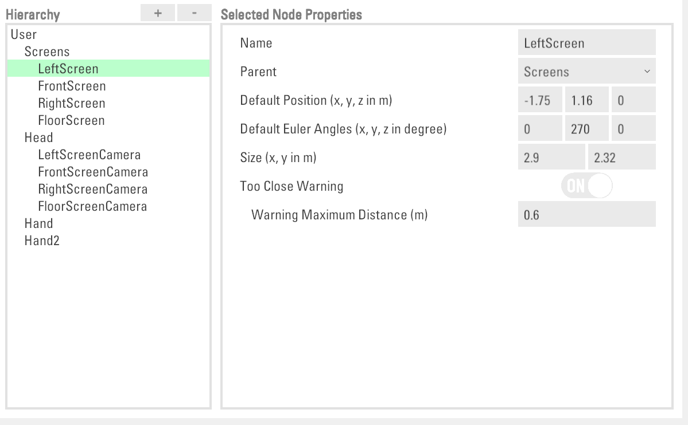
Camera is the camera to project the view of virtual world to the screen.
Project Screen is the screen to project.
Display Index in Unity is the corresponding display index in Unity scene.
Is Stereo and Is Inverted Eye are the boolean to toggle the stereo mode for the camera and invert the eye for the camera.
Is Stabilizer is the boolean to convert the camera into stabilizer, it is to stabilize the camera to decrease the extent of discomfort.
Enable On Start is boolean to enable the stabilizer on the application start.
Sync Target is the target to synchoronize for the stabilizer.
Position Axes and Rotation Axes are the axes to synchoronize.
Lerp Factor is the factor for the stabilizer to perform lerping.
Minimum Sync Distance and Minimum Sync Angle are the minimum value for the stabilizer to start synchoronize.
First Person is the boolean to set the stabilizer is for first person or not, it will synchoronize with Position Offset and Rotation Offset with first person method if true.
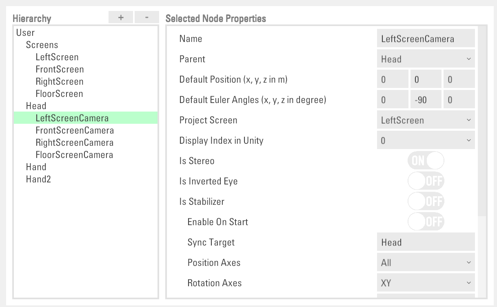
To create a new node, click the + button next to Hierarchy title, input name and select parent and node type.
Note that all of the reference is reference by name.
XR Objects Structure
There are different default structure for PC, HMD, CAVE and DOME.
The User is the root node for all the structure of single user application.
For PC, the Screens and Head follow the User node, and the MainCamera, Hand and Hand2 follow the Head.
PC application is displayed in the main monitor, so most of the entities are separated with the Screens, and no screen is required.
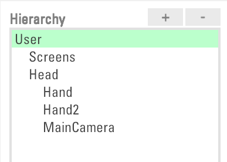
For HMD, the Screens, Head, Hand and Hand2 follow the User node, MainCamera follows the Head and RightScreen follow the Screens.
Another root camera node Stablizer is independent from the User.
In HMD application, the camera follows the head with HMD tracker, and the hands are using independent trackers.
The screen is mainly used for the info wall, will be introduced in later section.
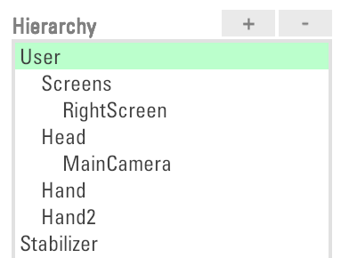
For CAVE, the Screens, Head, Hand and Hand2 follow the User node, LeftScreen, FronScreen, RightScreen and FloorScreen follow the Screens, and LeftScreenCamera, FronScreenCamera, RightScreenCamera and FloorScreenCamera follow the Head.
In CAVE applcation, the cameras follow the head with head tracker and project to the screens, and hands are using independent trackers.
The application usually is displayed in the four monitors, will be introduced in later section.
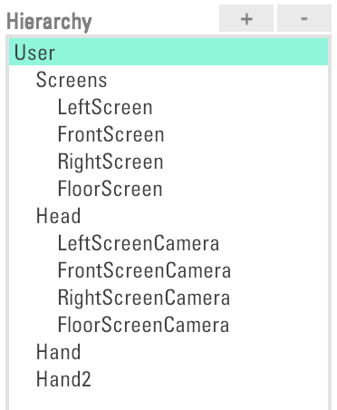
For DOME, the Screen, Head, Hand and Hand2 follow the User node, and the MainCamera follows the Head.
DOME application is displayed in the DOME, the viewport will be projected into DOME Screens, and hands are using independent trackers.
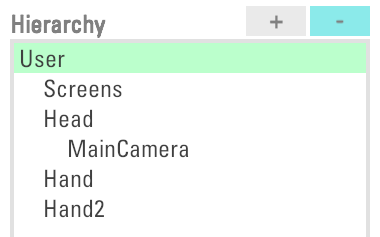
Display
This section stores the setting of display monitor, the display can be preview in 3D Space View window and Viewports Diagram window.
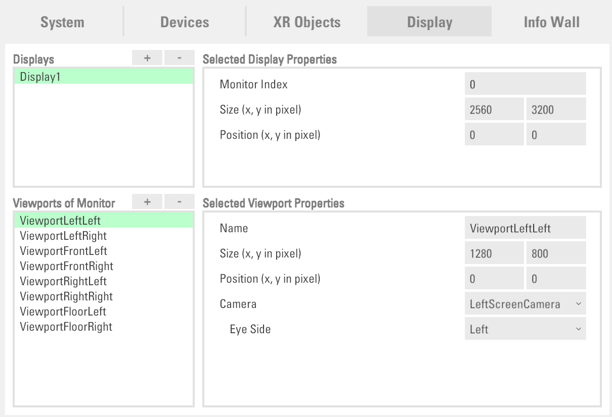
Display is the display monitor for the user to display the application.
Monitor Index is the corresponding monitor index in the computer system.
Size is the size of application in pixel.
Position is the position of application in pixel.
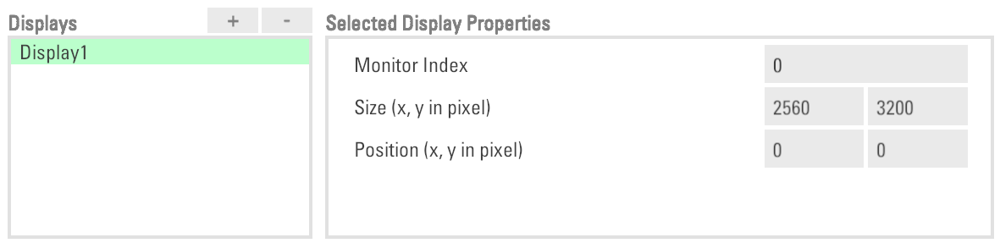
Viewports of Monitor is the viewports to convert the camera view into the application screen.
Size is the size of corresponding viewport in pixel.
Position is the position of corresponding viewport with respect to the application in pixel.
Camera is the corresponding camera for the XR Objects with the specific Eye Side.

The viewports can be visualized in Viewports Diagram window, below is the viewport of the CAVE environment.
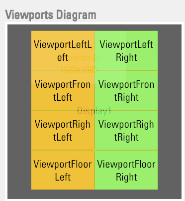
Info Wall
Info wall is a canvas to display the information related to the SDK Manager of the application. It mainly displays the watermark and text.
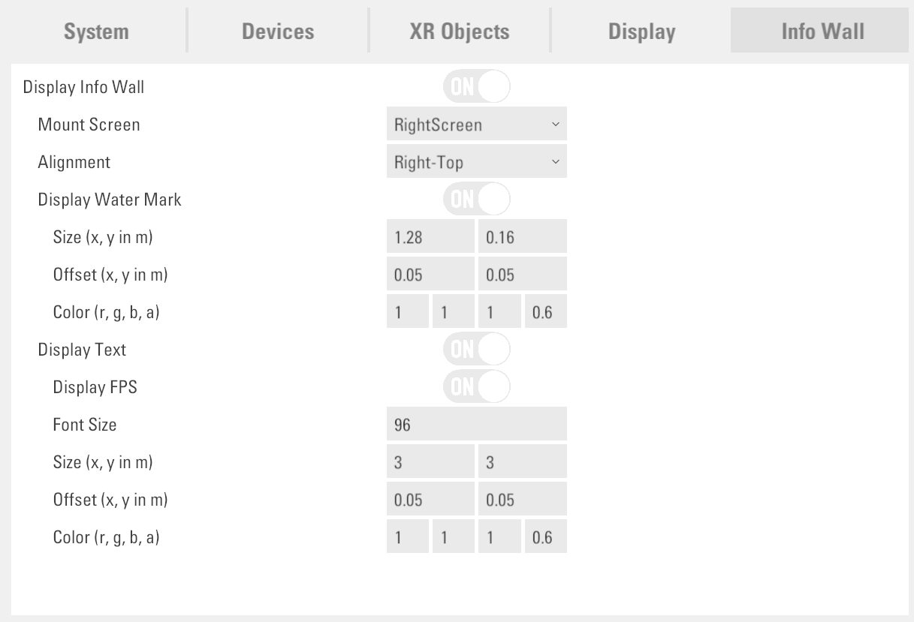
Display Info Wall is boolean to toggle the visibility of info wall.
Mount Screen is option to choose which screen to display the info wall.
Alignment is the alignment for the info wall.
Display Water Mark is boolean to toggle the visibility of watermark, and display the watermark with Size, Offset and Color.
Display Text is boolean to toggle visibility of the text, and display the FPS if Display FPS is on with FontSize, Size, Offset and Color.